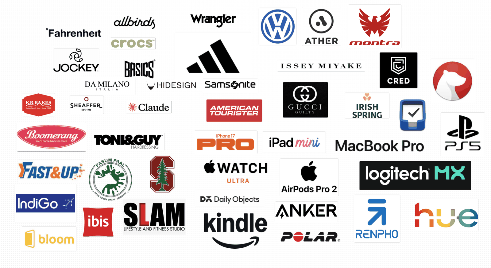

One
of Each
I made a board of every brand I use. It has forty-five logos on it and almost no choices.
One slow evening in August I opened Freeform and started dropping in logos.
The car, the scooter, the cycle. The shoes I wear to the office and the ones I wear to the shop downstairs. The bakery, the milk, the gym, the hairdresser, the airline, the hotel I book without looking at the others. The phone, the watch, the laptop, the pen. I had meant to spend twenty minutes on it and I spent the evening, and when I finally sat back the board had forty-five logos on it, one for each thing I use, and not a single job on it with two.
I had expected it to look like a collection. What it looked like was a list of decisions I no longer make.

Almost nothing on that board has a rival next to it. There is one car, one scooter, one gym, one bakery, one milk, one hotel chain, one airline, one pen. Where a job is done by a thing, one thing does it, and it has usually done it for years. That is what I mean by no choices. A choice needs at least two options on the table, and for most of my life there is only one, so the choosing simply never happens. Nobody sets out to live like this. It happens one purchase at a time. You buy a pair of Wranglers one year because they fit, and the next time you need jeans you buy the same pair because they fit last time, and after a few rounds of that you are no longer choosing jeans, you are reordering them. Ten years on you notice you have not stood in a jeans section since, that you never once missed it, and that the hour you would have spent there each year quietly went somewhere else.
The part that made me laugh was the range. Crocs sit a few inches from Gucci Guilty. Jockey is next to Issey Miyake. An ibis logo shares a row with Da Milano, and KR Bakes and Pasum Paal, two Coimbatore brands that nobody outside the district has heard of, are a short drift from a Stanford tree. If you were building a board of the best things, you would not build this one. There is no coherent taste on it, no price point, no aesthetic that a stylist would sign off on. The only thing every logo has in common is how it got there. I picked it once, it worked, and I stopped looking.
I do not want the best jeans.
I want to never think about jeans again.
That is the actual idea, and it took me a full board to see it. The best is a moving target that requires you to keep looking, which is precisely the thing I do not have room for, and the default is a target that stays still once you have hit it. Every logo on the board is a small piece of attention I get back every week, and forty-five of them, compounded across a year, is most of the attention I have.
I think this is why people who optimise everything look so tired. They are running fifty open searches at once and calling it standards.
There is a version of this that is just laziness with a nicer name, and I want to be honest about that, because the board shows it too. A few of the logos are not there because I love them. They are there because switching would cost an afternoon I have not had, and the thing in question is fine, and fine is enough to keep a default alive for years past the point where it deserves to be. A default does not need your approval to stay. It only needs your absence, and I am absent from most of my own purchasing decisions by design. So the same board that shows what I am loyal to also shows, if I look closely, what I am merely stuck with, and it does not label which is which.
The test I settled on is a plain one. Of the forty-five, which five would I actually feel the loss of tomorrow. Not miss in the sense of having to find a replacement, which is an errand, but miss in the sense of a week going slightly wrong. My list came quickly: the Polo, the iPhone, Fahrenheit for t-shirts, CRED for every payment I make, and Muthu at Toni & Guy, my go-to guy and the only logo on the board that is actually a person. I did not have to think, and that is the point. Five out of forty-five are love. The rest are the road to the office: it works, I never think about it, and I would only notice it the day it was dug up.
The evening in Freeform was itself a default being installed, of course. I spent a few hours choosing, expensively and all at once, so that I would not have to keep choosing in small, expensive pieces for the rest of the year. That is the whole trick, if there is one. Decide once, properly, and then let the decision do the deciding.
Autopilot is the whole point of the board. Just look at the instruments now and then, because autopilot will fly a wrong course as smoothly as a right one.
Co-founder, Buyofuel · Coimbatore, India
Enjoyed this? Read Up for It next, or browse the writing shelf, or say hello on LinkedIn and Instagram.